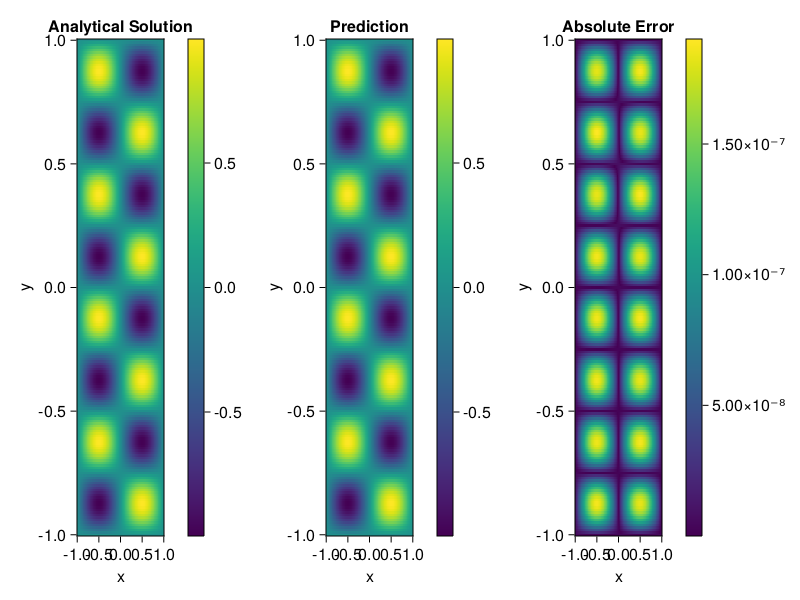

Helmholtz equation
Let us consider the Helmholtz equation in two space dimensions
\[\begin{aligned} &\Delta u(x, y)+k^{2} u(x, y)=q(x, y), \quad(x, y) \in \Omega:=(-1,1)^2 \\ &u(x, y)=0, \quad(x, y) \in \partial \Omega \end{aligned}\]
where
\[q(x, y)=-\left(a_{1} \pi\right)^{2} \sin \left(a_{1} \pi x\right) \sin \left(a_{2} \pi y\right)-\left(a_{2} \pi\right)^{2} \sin \left(a_{1} \pi x\right) \sin \left(a_{2} \pi y\right)+k^{2} \sin \left(a_{1} \pi x\right) \sin \left(a_{2} \pi y\right).\]
The excat solution is $u(x,y)=\sin{a_1\pi x}\sin{a_2\pi y}$. We chose $k=1, a_1 = 1$ and $a_2 = 4$.
using ModelingToolkit, IntervalSets, Sophon, Lux
using Optimization, OptimizationOptimJL
@parameters x,y
@variables u(..)
Dxx = Differential(x)^2
Dyy = Differential(y)^2
a1 = 1
a2 = 4
k = 1
q(x,y) = -(a1*π)^2 * sin(a1*π*x) * sin(a2*π*y) - (a2*π)^2 * sin(a1*π*x) * sin(a2*π*y) + k^2 * sin(a1*π*x) * sin(a2*π*y)
eq = Dxx(u(x,y)) + Dyy(u(x,y)) + k^2 * u(x,y) ~ q(x,y)
domains = [x ∈ Interval(-1,1), y ∈ Interval(-1,1)]
bcs = [u(-1,y) ~ 0, u(1,y) ~ 0, u(x, -1) ~ 0, u(x, 1) ~ 0]
@named helmholtz = PDESystem(eq, bcs, domains, [x,y], [u(x,y)])\[ \begin{align} \frac{\mathrm{d}}{\mathrm{d}y} \frac{\mathrm{d}}{\mathrm{d}y} u\left( x, y \right) + \frac{\mathrm{d}}{\mathrm{d}x} \frac{\mathrm{d}}{\mathrm{d}x} u\left( x, y \right) + u\left( x, y \right) =& - 166.78 \sin\left( 3.1416 x \right) \sin\left( 12.566 y \right) \end{align} \]
Note that the boundary conditions are compatible with periocity, which allows us to apply BACON.
chain = BACON(2, 1, 5, 2; hidden_dims = 32, num_layers=5)
pinn = PINN(chain) # call `gpu` on it if you want to use gpu
sampler = QuasiRandomSampler(300, 100)
strategy = NonAdaptiveTraining()
prob = Sophon.discretize(helmholtz, pinn, sampler, strategy)
@time res = Optimization.solve(prob, BFGS(); maxiters=1000)u: ComponentVector{Float64}(filters = (filter_1 = (bias = [-0.4716788802733538; 0.6414894846908896; … ; -0.27737378951564423; -0.5970601301283025;;]), filter_2 = (bias = [-0.48140823224233054; 1.0400617869161857; … ; -0.8714034503732845; 0.2528034216431136;;]), filter_3 = (bias = [0.034715154861877; -0.6142280711379137; … ; -0.5693764901446214; -0.608502640243616;;]), filter_4 = (bias = [0.5403487568478907; -0.6686206555379308; … ; 0.5580138913497413; 0.011671552826199404;;]), filter_5 = (bias = [-0.2517323443844444; 0.827324505159699; … ; -0.9326916190250097; -0.3979442816780238;;])), linear_layers = (layer_1 = (weight = [-0.2799731246616343 0.2988372027832225 … 0.07320249745756115 0.6196930165026329; -0.05202536839585561 -0.3452787622773228 … -0.2828087799094275 -0.5039894614255706; … ; 0.3729337753144616 -0.4003060116468012 … 0.36798505101013346 0.2669705933416386; 0.02394067356312387 0.2959683245409224 … 0.2553898085162865 -0.3242865813255336], bias = [-0.04966971864487084; -0.010486853449856367; … ; 0.014249517233247225; -0.01529019308157275;;]), layer_2 = (weight = [0.1542591144481575 -0.13211810940457405 … -0.031007487164988384 0.40756942297698573; 0.2066052126020506 -0.3858700901871095 … 0.4358638023509976 0.04018788453113551; … ; -0.26744803788730487 0.0006612008089157083 … -0.12004842916317911 0.02095233639532384; 0.14598885221381963 0.37899363905787004 … -0.11034487886290846 -0.23481758055505006], bias = [0.03224760830918841; -0.010462821380055404; … ; -0.03356413390277518; -0.004933034029326191;;]), layer_3 = (weight = [0.15153083754784594 -0.3101328557766719 … -0.0016803741050426522 0.12519702173297337; -0.10380829663359174 -0.09494797980582997 … -0.27379292567406965 0.3145152480009632; … ; -0.2570988011487688 -0.38689258172189095 … 0.43034049721277917 -0.11086560980330257; 0.003384795939870088 0.2710153477362931 … 0.3805415934959798 -0.30541250223583255], bias = [-0.0036472848487721005; -0.0014665701425585285; … ; -0.025029920705985153; 0.002031073147865075;;]), layer_4 = (weight = [0.27660897582111144 -0.305685231546315 … 0.34667431579304747 0.12288771321420935; -0.3762611691992884 0.04486930996715733 … -0.04558512062781093 0.27431448244235346; … ; -0.22537341806557673 -0.3745787363871079 … 0.05510067133283223 0.1783634707395226; 0.2707209815664944 0.1193837966989818 … -0.09822982444701293 0.07680361001641806], bias = [0.00045680631010245183; 0.008704049200577104; … ; -0.018160585932687243; 0.018360434772351133;;])), output_layer = (weight = [-0.35832503966806506 -0.15282419139032688 … 0.16038779614680337 0.20040593629808617], bias = [0.00040866791205764223;;]))Let's plot the result.
phi = pinn.phi
xs, ys= [infimum(d.domain):0.01:supremum(d.domain) for d in domains]
u_analytic(x,y) = sinpi(a1*x)*sinpi(a2*y)
u_real = [u_analytic(x,y) for x in xs, y in ys]
phi_cpu = cpu(phi) # in case you are using GPU
ps_cpu = cpu(res.u)
u_pred = [sum(phi_cpu(([x,y]), ps_cpu)) for x in xs, y in ys]
using CairoMakie
axis = (xlabel="x", ylabel="y", title="Analytical Solution")
fig, ax1, hm1 = heatmap(xs, ys, u_real, axis=axis)
Colorbar(fig[:, end+1], hm1)
ax2, hm2= heatmap(fig[1, end+1], xs, ys, u_pred, axis= merge(axis, (;title = "Prediction")))
Colorbar(fig[:, end+1], hm2)
ax3, hm3 = heatmap(fig[1, end+1], xs, ys, abs.(u_pred-u_real), axis= merge(axis, (;title = "Absolute Error")))
Colorbar(fig[:, end+1], hm3)
fig